Press
A story-first mech game for one thumb, told in ten acts of inked comic pages
Trailer, 53 seconds. Also upright for phones.
The Empire's machines took everyone from Yard Nine, a scrap town in the desert. You were out at the wrecks and came home late, so you are the one person left: not on any list, the loudspeakers say. Nobody. You climb into the rig you built from dead machines and follow their tracks up the road.
On the way, an old pilot named Tobin shows you the road, and four people join your squad: Bram, a loud quarry boss; Ilse, an engineer who walked out on the Empire; Oren, your neighbour, with his front door for a shield; and Pip, eleven and a half, once you get him back.

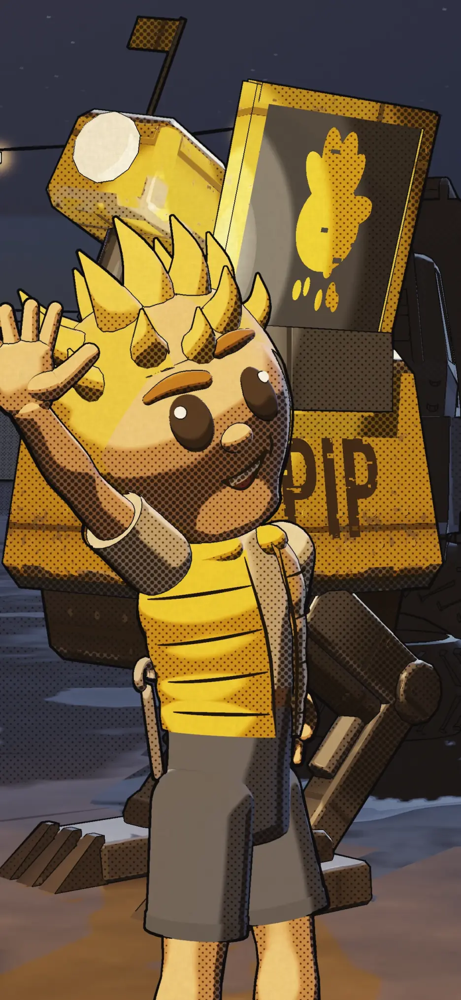
Pictures
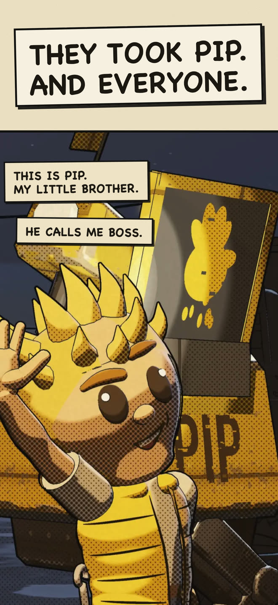
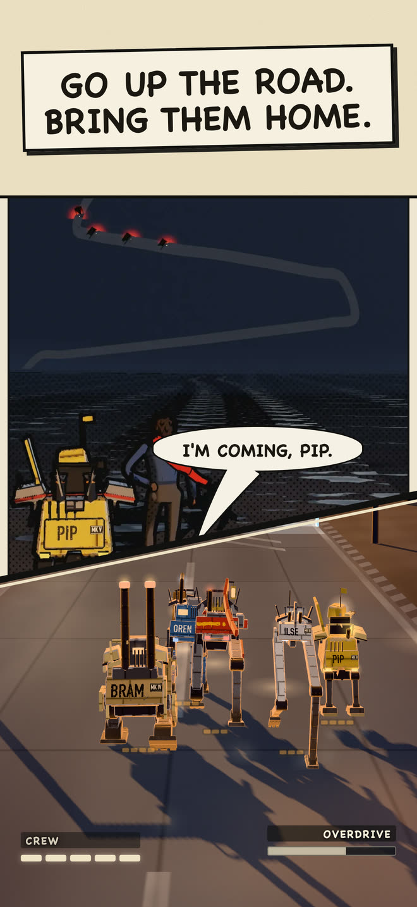
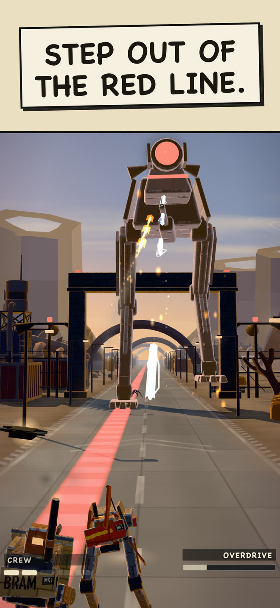
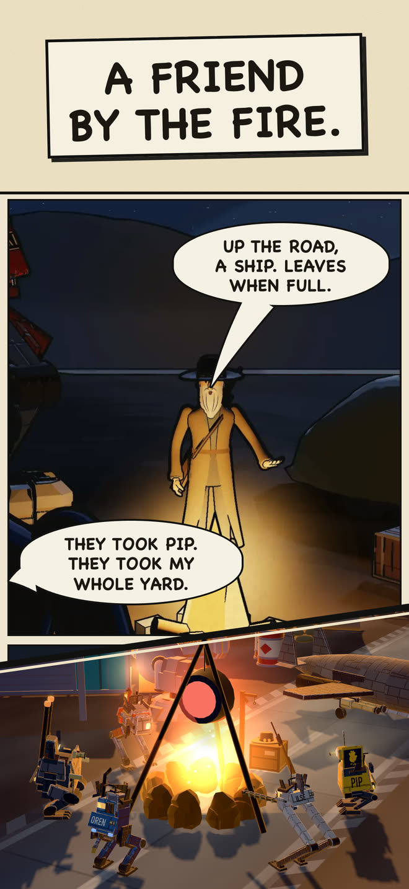
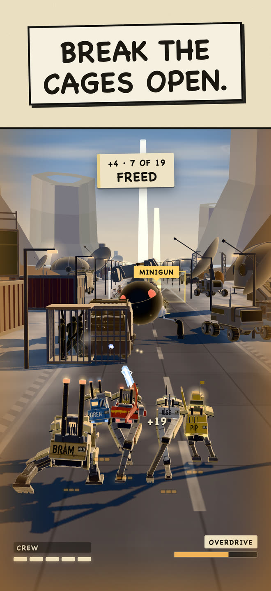
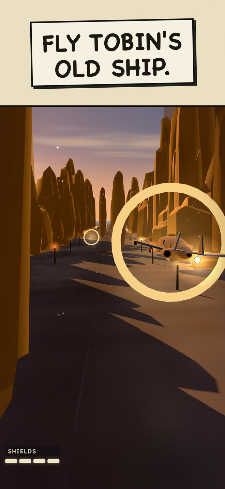
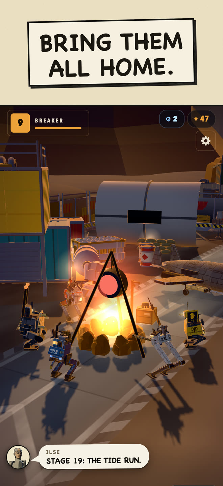
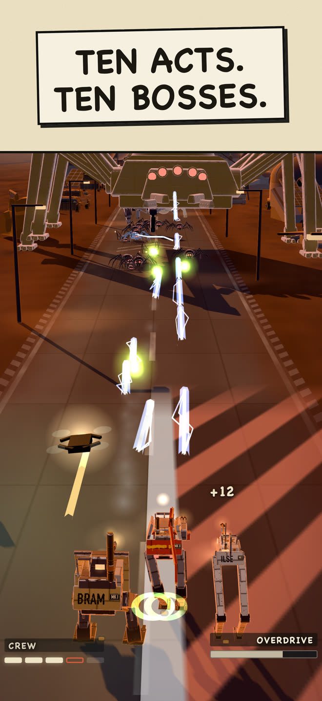
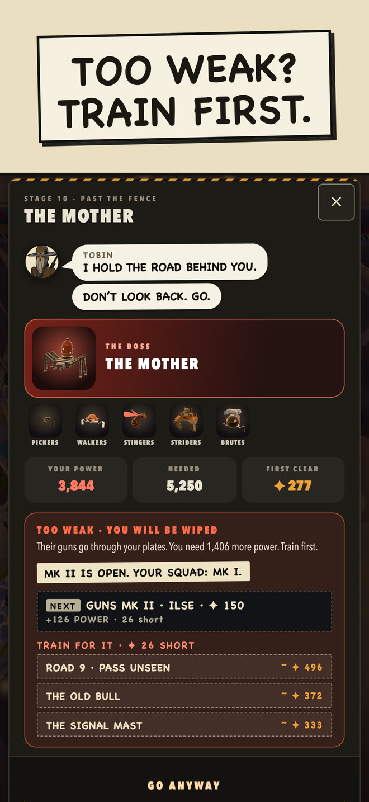
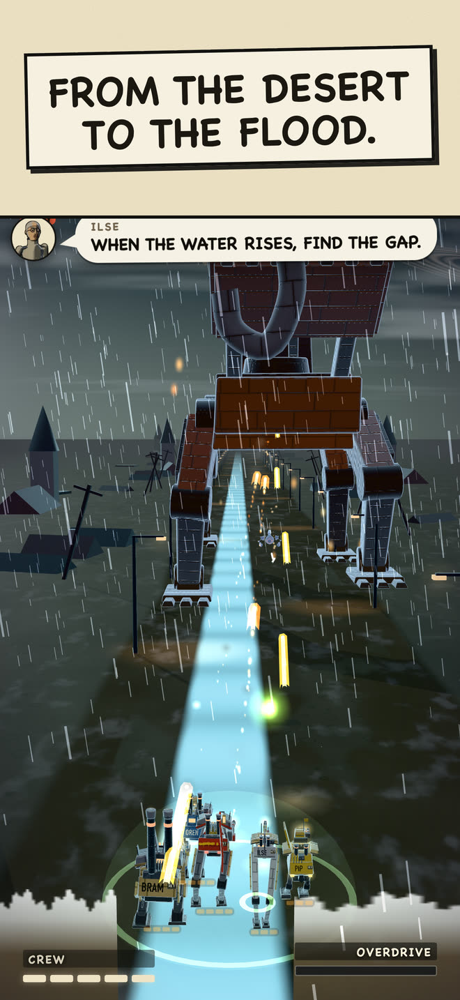
How it plays
- You steer the squad with one thumb. The crew fire on their own.
- Gates on the road power up the push. Bosses warn before they hit: a red line on the road, a ring, half the road lit. Step out of it.
- Between pushes you build a camp and fit each rig with guns, an engine and armour, from Mk I to Mk VI. The rigs start as rust and tarp and end as war machines; every part you fit shows.
- In every act but one you fly the Magpie, Tobin's old ship, and fix her up too.
- The walls are real. A weak squad gets wiped, and the camp shows what to build and where to earn it.
What is different about it
- The story is a comic. Every story scene is an inked comic page, nearly a hundred of them, drawn from the game's own 3D models by an ink pipeline made for Strike, so the rigs in the comic are the rigs you build.
- Nothing interrupts play. No ads, ever. No energy or lives. Nothing random is sold, and rig parts can't be bought.
- Made in code. The music and sound are made by the game itself.
- Made by one person.
Facts
| Developer | Ivo Iturrieta |
| Platform | iPhone |
| Release | December 17, 2026 |
| Price | Free to start: act one (five stages) is free. THE WHOLE ROAD opens all ten acts and every mode, with one purchase. PAINT TINS changes only the colour of the crew's guns. |
| Ads | None, ever |
| Data | No personal data. Anonymous play stats, which players can turn off. Works offline. |
| Size | Ten acts, forty stages, ten bosses; nearly a hundred comic pages |
| Language | English |